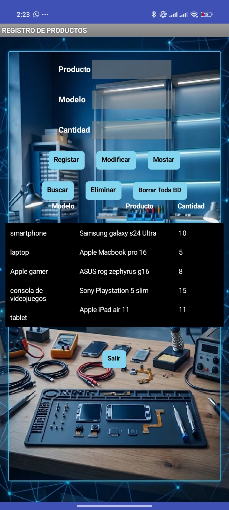
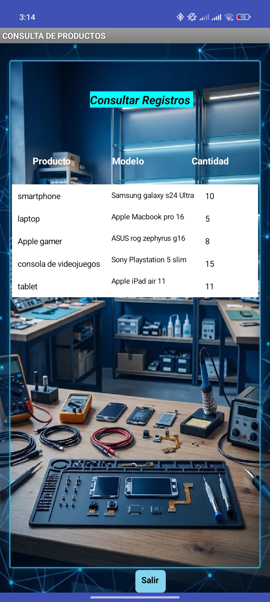
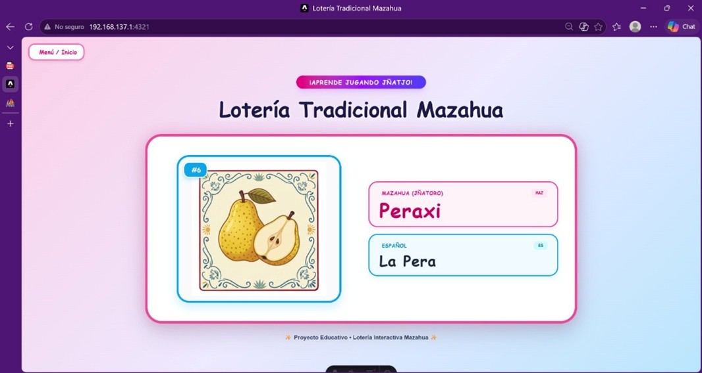
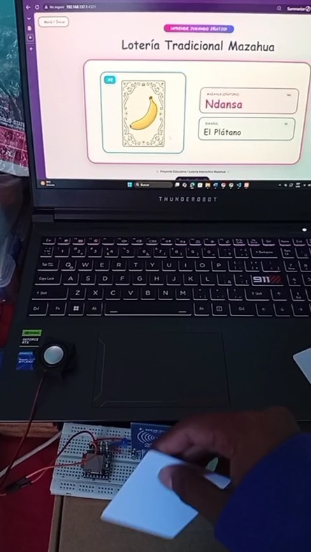
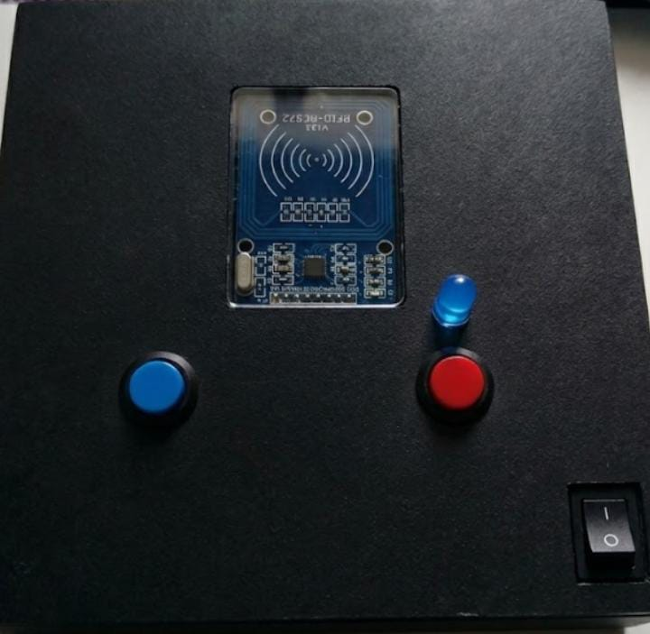
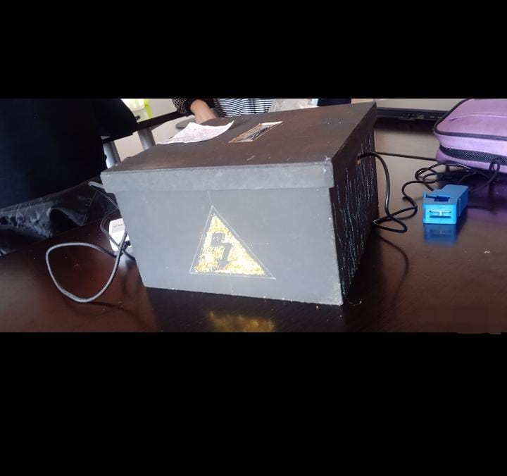
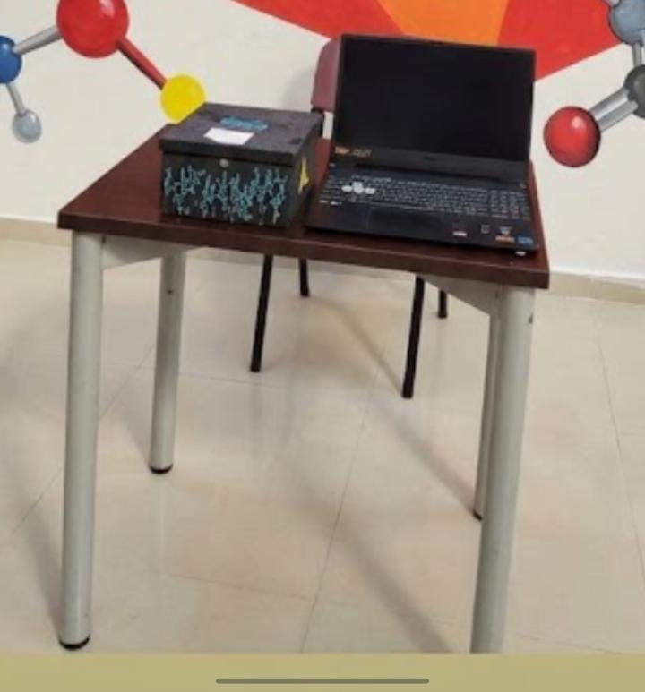

Eje · Académico
Aprendizaje y Proyectos
Catálogo Obligatorio de Proyectos
Mis Proyectos de Software y Prototipos
Proyectos desarrollados durante la formación académica atendiendo problemas específicos del entorno comercial, educativo e industrial.
1. Aplicación de Registro de Productos y Control de Inventario (App Móvil)
- Nombre: Sistema Móvil de Control de Inventario y Registro de Artículos.
- Propósito: Optimizar el control de mercancía en un establecimiento mediante una interfaz digital para altas, modificaciones, búsquedas y bajas de stock.
- Tipo de Proyecto: Aplicación Móvil de Gestión de Datos.
- Contexto: Desarrollado para la materia del Módulo III (Submódulo II: Desarrolla aplicaciones móviles) relacionado con el Módulo III de aplicaciones web y móviles.
- Fecha: 14 de junio de 2023.
- Problema Atendido: Desorganización y control manual lento de existencias en locales comerciales.
- Usuarios: Personal administrativo, encargados de local y operadores del negocio.
- Herramientas y Tecnologías: App Inventor, entorno de desarrollo móvil y base de datos local.
- Rol y Tareas: Construcción de la estructura de almacenamiento de datos y programación de la lógica operativa de los botones de control (Registrar, Modificar, Mostrar, Buscar, Eliminar).
- Estado, Resultados y Mejoras: Finalizado y en fase de pruebas operativas.

Panel Principal / Registro
Vista de Consulta / Empleados2. Lotería Interactiva Mazahua (IoT y Educación)
- Nombre: Lotería Didáctica Interactiva en Lengua Mazahua.
- Propósito: Facilitar el rescate y aprendizaje de la lengua indígena Mazahua en niños de primaria mediante un juego interactivo integrado con hardware.
- Tipo de Proyecto: Sistema Educativo IoT (Internet de las Cosas).
- Contexto: Desarrollo de prototipos tecnológicos educativos vinculados al rescate cultural Mazahua.
- Fecha: 28 de octubre de 2026.
- Problema Atendido: Pérdida de transmisión generacional de la lengua materna en infantes de comunidades escolares.
- Usuarios: Estudiantes de nivel primaria y profesores de educación básica.
- Herramientas y Tecnologías: Microcontrolador ESP32, tarjetas RFID RC522, reproductor de audio DFPlayer Mini y programación en Python.
- Rol y Tareas: Trabajo colaborativo en equipo enfocado en la programación de microcontroladores y la integración de hardware dentro de una estructura de caja compacta para optimizar la estética visual.
- Estado, Resultados y Mejoras: En fase final de implementación física y pruebas de campo escolares.

Interfaz y Software
Tarjetas Didácticas
Estructura en Caja y Hardware ESP32 / RFID3. Monitoreo y Hardware: Prototipo de Consumo Eléctrico
- Nombre: Sistema Embebido de Medición y Visualización de Consumo Eléctrico.
- Propósito: Desarrollar un prototipo electrónico orientado al sensado y visualización de datos de consumo de energía mediante hardware embebido y conectividad inalámbrica.
- Tipo de Proyecto: Sistema Electrónico de Monitoreo Industrial / Doméstico.
- Contexto: Práctica integradora de hardware y conectividad de dispositivos inteligentes.
- Fecha: 12 de abril de 2025.
- Problema Atendido: Falta de visibilidad en tiempo real sobre el gasto de energía eléctrica para la toma de decisiones de ahorro.
- Usuarios: Administradores de inmuebles y usuarios interesados en eficiencia energética.
- Herramientas y Tecnologías: Microcontroladores ESP32, sensores de corriente eléctrica y plataformas de visualización en la nube.
- Rol y Tareas: Trabajo colaborativo en equipo enfocado en el diseño del circuito electrónico, calibración de sensores y transmisión inalámbrica de datos.
- Estado, Resultados y Mejoras: Finalizado y validado.

Circuito y Sensores
Visualización de Consumo
Reflexión de Cierre:
¿Cuál de mis proyectos demuestra mejor mis competencias y cómo podría mejorarlo?
La Aplicación Móvil de Registro de Productos demuestra de forma directa las competencias en desarrollo de software y bases de datos locales orientadas a la solución de necesidades comerciales. Podría mejorarse integrando esquemas de seguridad en la autenticación de usuarios y sincronización con servidores en la nube en tiempo real.
La Aplicación Móvil de Registro de Productos demuestra de forma directa las competencias en desarrollo de software y bases de datos locales orientadas a la solución de necesidades comerciales. Podría mejorarse integrando esquemas de seguridad en la autenticación de usuarios y sincronización con servidores en la nube en tiempo real.
Actividad Tecnológica · Resolución de Incidentes
Aprendizaje Basado en Problemas y TIC
- Fecha de Intervención: 29 de julio de 2026.
- Equipo Intervenido: Impresora Multifuncional Epson L5290.
- Tipo de Servicio: Mantenimiento correctivo y diagnóstico de hardware.
Diagnóstico de Fallas: Bloqueo inmediato de órdenes de impresión (vía red local y copia directa). Parpadeo constante del panel de control con Error Crítico E01.
Hipótesis iniciales:
- Atasco mecánico de papel no visible en la bandeja principal.
- Fallo en el sensor óptico de posicionamiento del motor (Encoder circular).
Evidencia hallada: Tras la apertura del chasis e inspección interna, se descartó la presencia de residuos de papel. Al auditar el mecanismo de arrastre, se evidenció la ruptura física del disco encoder circular.
Alternativas Tecnológicas y Criterio de Elección:
- Alternativa A (Sustitución de equipo completo): Alto costo y tiempo prolongado de baja del servicio. Descartada.
- Alternativa B (Reparación mediante adhesivo o parche del encoder dañado): Solución inestable; el sensor óptico requiere precisión milimétrica.
- Alternativa C (Reemplazo de pieza original + mantenimiento al sensor): Opción seleccionada por costo-beneficio, garantía de precisión y retorno inmediato a la operatividad.
Procedimiento Ejecutado:
- Desmontaje cuidadoso del módulo lateral y componente encoder fracturado.
- Reemplazo por un disco encoder circular nuevo original.
- Limpieza profunda del sensor óptico de posicionamiento y lubricación.
- Reensamblaje y pruebas de encendido.
Resultados Obtendidos:
- Eliminación inmediata del Error E01 en el panel de control.
- Restablecimiento automático de la calibración del carro de impresión.
- Reanudación fluida de la conectividad en la red local y cola de trabajo.
Evidencia Digital: Reporte Técnico Visual de Reparación Hardware
📄 Consultar Reporte Técnico
Reflexión de Cierre:
¿Qué conocimientos aplicaste fuera del aula?
En esta intervención apliqué principios de diagnóstico estructurado de fallas y metodologías de solución de problemas propios de la ingeniería de sistemas y hardware. Más allá de la teoría vista en clase sobre arquitectura de equipos y redes, puse en práctica la capacidad de realizar una auditoría física metódica bajo presión, la evaluación rápida costo-beneficio de alternativas tecnológicas, y el análisis de causa raíz para resolver una parálisis operativa en un entorno real sin sustituir innecesariamente el equipo completo.
En esta intervención apliqué principios de diagnóstico estructurado de fallas y metodologías de solución de problemas propios de la ingeniería de sistemas y hardware. Más allá de la teoría vista en clase sobre arquitectura de equipos y redes, puse en práctica la capacidad de realizar una auditoría física metódica bajo presión, la evaluación rápida costo-beneficio de alternativas tecnológicas, y el análisis de causa raíz para resolver una parálisis operativa en un entorno real sin sustituir innecesariamente el equipo completo.